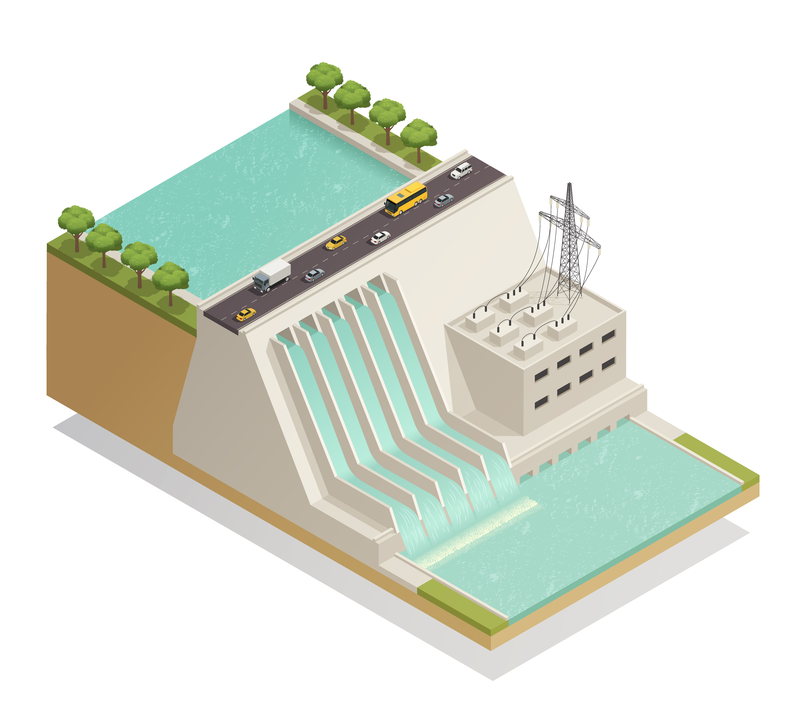

Open Data & Field Measurements

X-Band Radar Data
High-resolution coastal and river flow radar images for hydrodynamic studies.
Access Data

Camera Surveillance Data
Field video recordings for flood monitoring, river flow, and experimental validation.
Access Data
Multispectral & LiDAR Images
Remote sensing data for terrain, vegetation, and hydrological feature analysis.
Access Data
IoT Sensor Data
Real-time environmental and water resource measurements from lab-deployed sensors.
Access Data
Field Measurement Data
Manual measurements including river flow velocity, water level, and sediment sampling.
Access Data
Rainfall & Meteorological Data
Data from weather stations and rainfall gauges for hydrological modeling and analysis.
Access Data